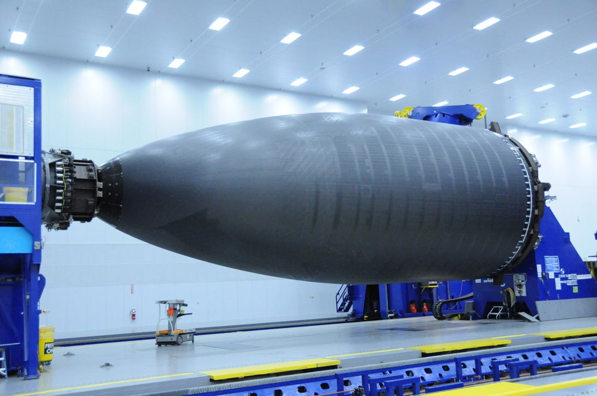
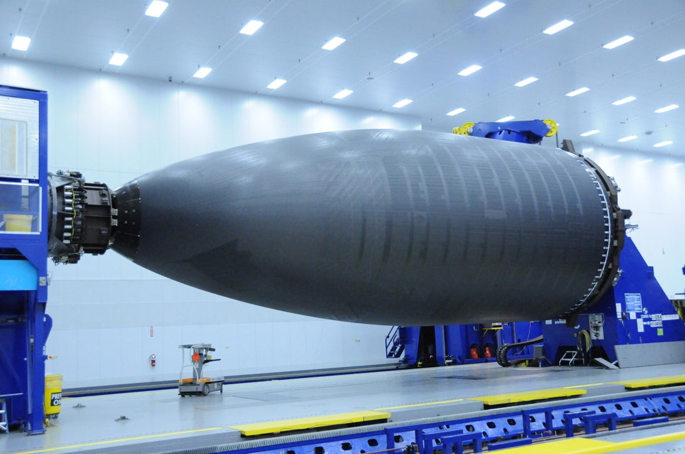

The 787 is something similar to a first love and first sight.  It's just an unexplicably handsome creation on the outside. And a pleasure to fly on the inside
It's just an unexplicably handsome creation on the outside. And a pleasure to fly on the inside
Powered by two GENx or Rolls-Royce Trent engines, the 787 is in no short supply of power 
 And its fuselage is made entirely from composite material, making it lighter yet stronger than aircrafts made from aluminium 
And its fuselage is made entirely from composite material, making it lighter yet stronger than aircrafts made from aluminium 
In the flight deck,the 787 packs teh cutting-edge of flight:  Two flight computers monitor the aircraft's status and make tiny, inperciptable adjustments many times a second to counter gust.
Two flight computers monitor the aircraft's status and make tiny, inperciptable adjustments many times a second to counter gust.